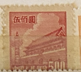
| SOURCE | TITLE| IMAGE MATCH | click to source page |
| eBay UK | Hinge Remaining Chinese Stamps for sale | eBay UK | 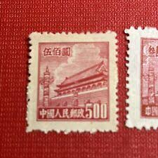 |
| eBay | 1950 china stamp tian an men 500 Red | eBay | 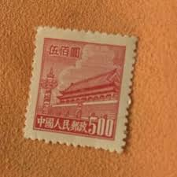 |
| eBay | s-l400.png |  |
| HipStamp | People's Republic of China 1951 Sc 93 Gate of Heavenly Peace Block/4 Stamp MNH | Asia - China, General Issue Stamp / HipStamp |  |
| PicClick | 1984 PRC CHINA Stamp Scott #1948 35th Anniv. of Founding of PRC Great Future $9.99 - PicClick | 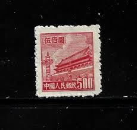 |
| DealBid | Ending Soon Listings in Stamps > Asia > China - 80 items per page - Ending Soon | DealBid |  |
| eBay | Mint No Gum/MNG Chinese Stamps for sale | eBay | 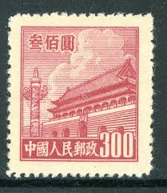 |
| chinesestamp.org | R04/PU4/普4, Regular Issue with Design of Tian An Men (4th Print) 《天安门图案普通邮票（第四版）》 - Chinese Postage Stamps | China Postage Stamps | Chinese Stamp Album | China Philatel | ACPF | Stamps Catalogue | 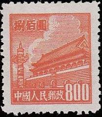 |
| Kenmore Stamp | Gate of Heavenly Peace - PRC #94 |  |
| eBay | No Gum Flags, National Emblems Chinese Stamps for sale | eBay | 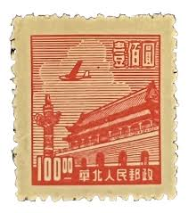 |
| PicClick UK | RARE , CHINA Stamp 20.000 Gate Of Heavenly Peace 1950, £1.00 - PicClick UK |  |
| Amazon.com | 1950 PRC RARE 1950 COMMUNIST CHINA GATE of HEAVENLY PEACE STAMPS (SET of 4) RARE 1950 COMMUNIST CHINA GATE of HEAVENLY PEACE STAMPS (SET of 4) Seller Mint State at Amazon's Collectible Coins Store |  |
| DealBid | Recently Listed Listings in Stamps > Asia - Page 44 of 44 - Recently Listed | DealBid | 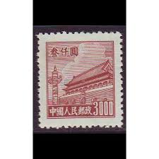 |
| eBay | 1950 china Tiananmen $5000 (printed Ed Unknown) | eBay | 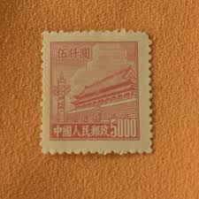 |
| PicClick | CHINA - "GATE Of Heavenly Peace" - Lot Of 9 Old Stamps - Unused!! $1.99 - PicClick | 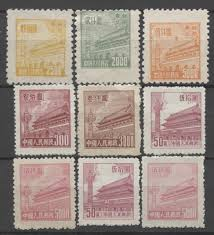 |
| China stamps - 1950 (Tian An Men) | 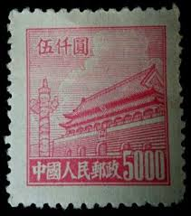 | |
| lastdodo.com | Gate of Heavenly Peace 800 (1950) - China - People's Republic - LastDodo |  |
| eBay | 1950 P.R.China, 5,000y Pink 1st Gate (R1), MNH, Rough Perf., Scott #18. | eBay |  |
| eBay | China, People's Republic of Scott #69 Mint No Gum As Issued | eBay | 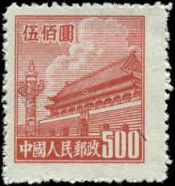 |
| eBay | China (PR) #94 used | eBay | 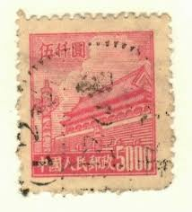 |
| eBay | China (Peoples Republic) #18 used | eBay |  |
| Todocolección | china 1954 sello (*) - 9/48 - Buy Antique stamps of China on todocoleccion | 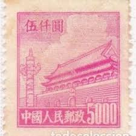 |
| HipStamp | China-Peoples Republic of Scott 13 | Asia - China, General Issue Stamp / HipStamp | 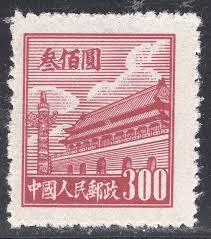 |
| eBay | PRC China Stamps: 1950 Gate of Heavenly Peace. 1st Issue SC 15 MNH, perf Fault | eBay |  |
| eBay | China 1949, North China, Tiananmen - Gate of Heavenly Peace, MNG Stamp | eBay | 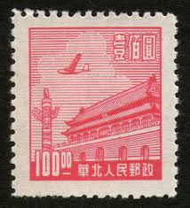 |
| HipStamp | China P.R.C. #69 Used - Stamp - CAT VALUE $3.25 | Asia - China, General Issue Stamp / HipStamp |  |
| eBay | PRC China, 1950, sc#70, Mint, NH, NGAI | eBay | 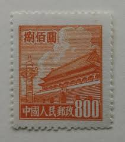 |
| Dreamstime.com | 633 Chinese Postage Stamp Stock Photos - Free & Royalty-Free Stock Photos from Dreamstime |  |
| Shutterstock | 3+ Thousand Beijing Stamp Royalty-Free Images, Stock Photos & Pictures | Shutterstock | 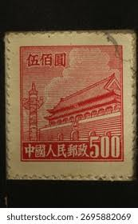 |
| PicClick | CHINA 1951 5TH Gate 100,000 Yuan blue PRC R5 Scott #99 Mint NH $225.50 - PicClick | 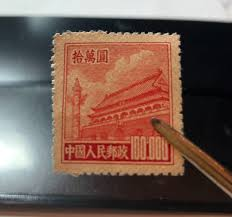 |
| eBay | 1950 China, R3, $300/500/800, Tien/Tian An Men, Gate of Heavenly Peace, MNH | eBay | 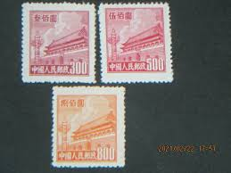 |
| eBay | 1950 China, R3, $300/500/800, Tien/Tian An Men, Gate of Heavenly Peace, MNH | eBay | 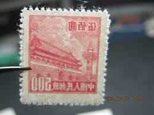 |
| eBay | China (PRC) 22 MNG | eBay | 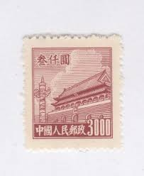 |
| eBay | Stamp China PRC 1954 R7 Tian An Men (6th Print) Set Block of 4 Set MNH. | eBay | 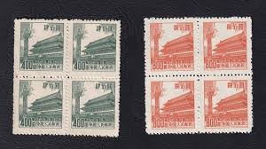 |
| eBay | People's Republic of China Scott #94 Used | eBay | 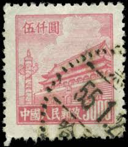 |
| eBay | PRC China Tien An Men block of 6 R4 MNH extra fiber on Pre-Printing Paper | eBay | 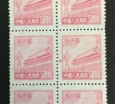 |
| eBay | China - North East China - 1950 Tiananmen - Gate of Heavenly Peace - 10,000 | eBay | 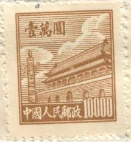 |
| eBay | China Sc 93, R4 $3000, Mint BLK of 6, No Gum as Issued, Fresh Color, Very Fine | eBay | 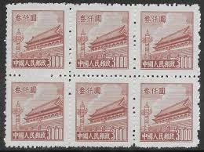 |
| Find Your Stamps Value | PORT ARTHUR AND DAIREN: Gate of Heavenly Peace - 亚瑟港和大连：天安门50y Deep purple stamp price, value | 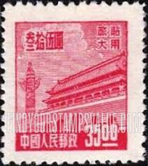 |
| eBay | CHINA PRC SCOTT # 88 PAIR MNH | eBay | 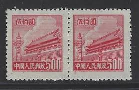 |
| Xabusiness.com | RN2 Regular Stamps with Design of Tian An Men (For Use in the Northeast, 2nd Print) - China Stamps | 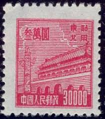 |
| Find Your Stamps Value | NORTHEAST CHINA: Gate of Heavenly Peace - 中国东北: 东北贴用: 天安门$2500 Yellow stamp price, value | 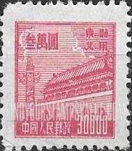 |
| eBay | China PRC 1950 R3 SC# 65-71 Gate of Heavenly Peace MNH NGAI Complete Set | eBay | 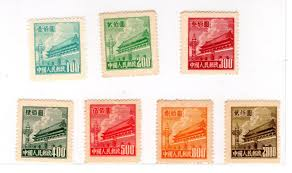 |
| Alamy | Postage stamp from the People's Republic of China (Mainland China) depicting the Gate of Heavenly Peace Stock Photo - Alamy | 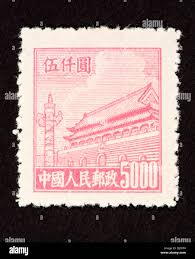 |
| eBay | PRC China Stamps, 1950, sc#89, Mint, NH, NGAI, Block of 4, | eBay | 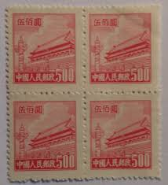 |
| eBay | $3000 Gate of Heavenly Peace SC#93 A13 ~ China Post No R4 ~ Used | eBay |  |
| eBay | $500 Gate of Heavenly Peace ~ SC#14 A5 ~ 3 Used Stamps ~ China | eBay | 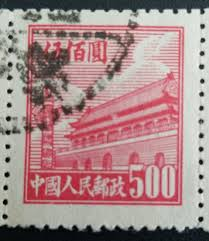 |
| Alamy | Chinese text gate hi-res stock photography and images - Alamy | 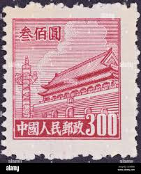 |
| eBay | People's Republic of China Scott #67 Mint No Gum As Issued PRC | eBay | 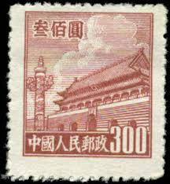 |
| eBay | China Old Stamp Qing Dynasty Imperial /ManChouKuo /ROC / T /J , YOU PICK - Mint | eBay | 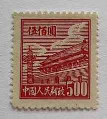 |
| eBay | PR China 1954 Sixth Issue $800 MNG A19P57F496 | eBay | 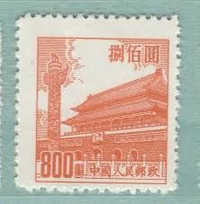 |
| eBay | People's Republic of China Scott #90 Pair Used PRC | eBay | 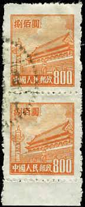 |
| eBay | PR China 1950 First Issue $10000 MNG A19P58F518 | eBay | 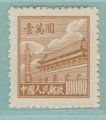 |
| China stamp | RL1 Scott 2l72-2l76 Regular Stamps with Design of Tian An Men (For Use in Luda) - China Stamps | 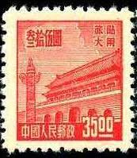 |
| HipStamp | North East China 1950 Gate of Heavenly Peace $5000 | Asia - China, Stamp / HipStamp | 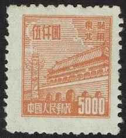 |
| eBay | Stamp PRC 1950 Gate of Heavenly Peace #23 MNH | eBay |  |
| Alamy | Postage stamp china hi-res stock photography and images - Page 2 - Alamy | 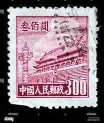 |
| Fandom | China (People's Republic) 1950 Gate of Heavenly Peace (1st Group) | JPP-Stamps Wiki | Fandom | 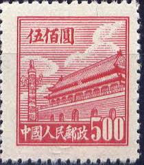 |
| us-china-stamps.com | Shop | 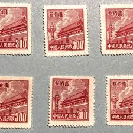 |